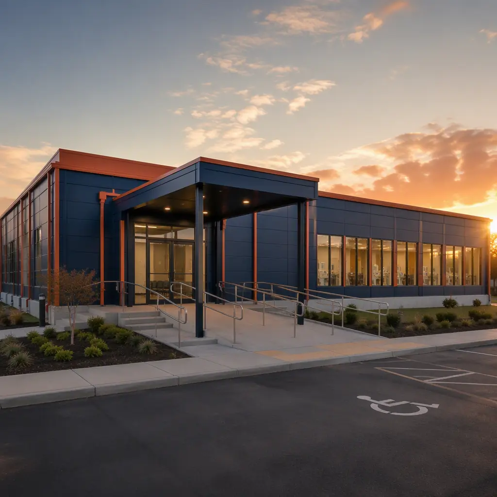
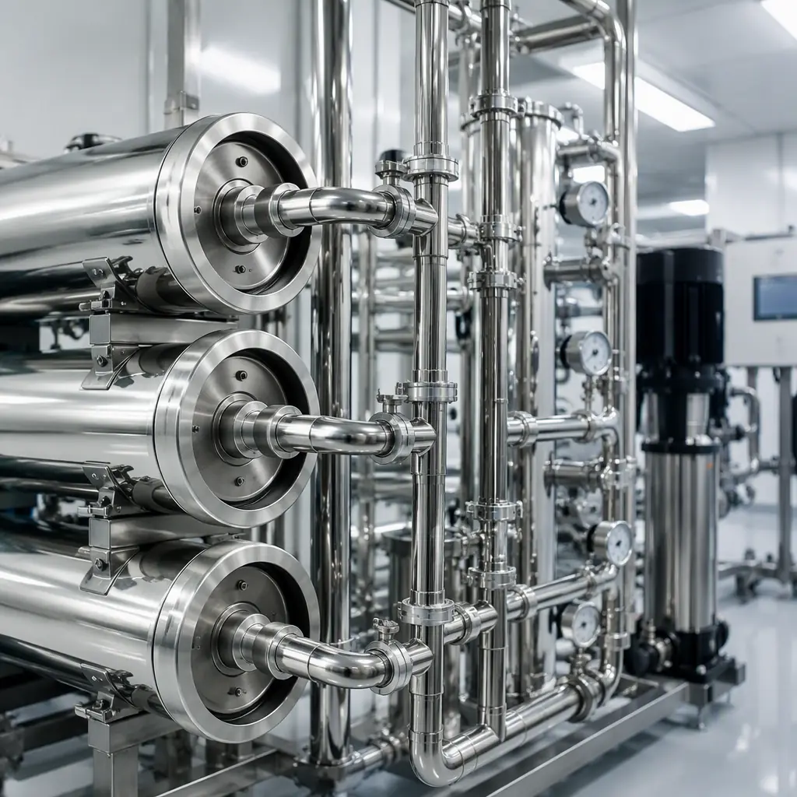
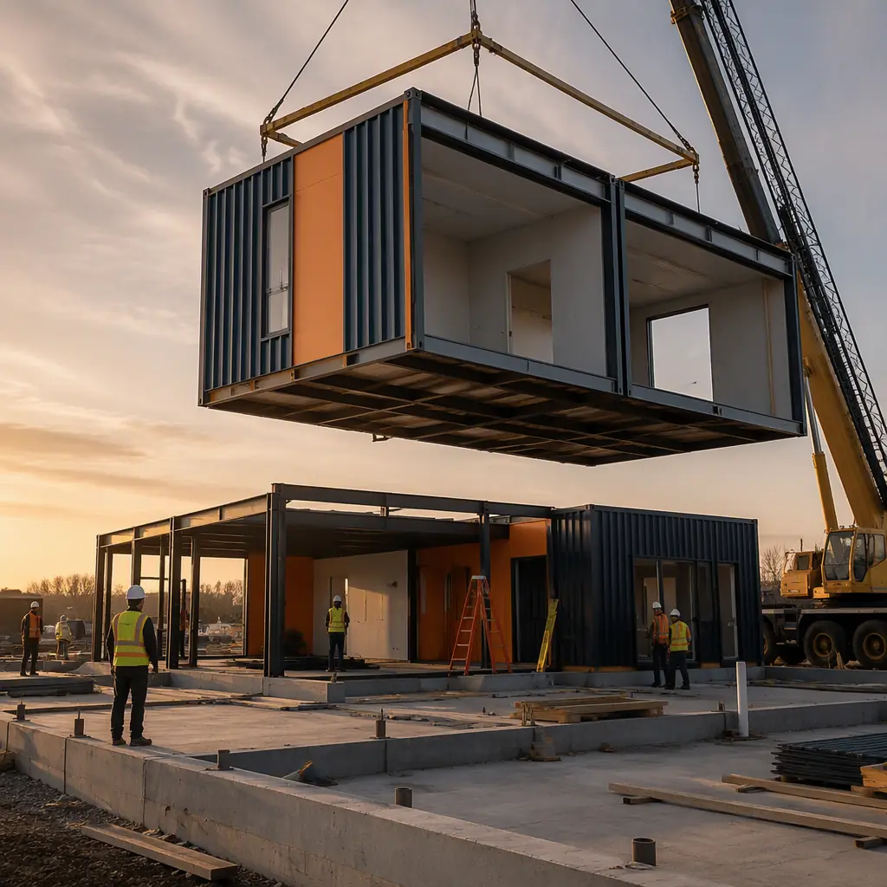
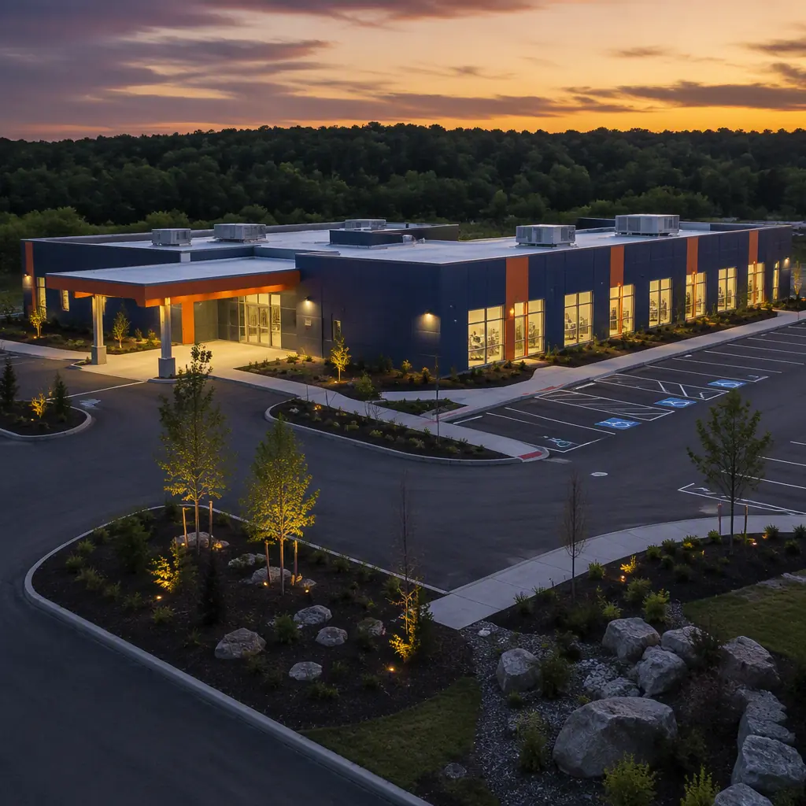

Dialysis is the most predictable building program in healthcare — and the hardest to build on time with conventional methods. A freestanding center is clinically identical from city to city: 12–24 treatment stations, a reverse-osmosis water treatment room, nurse stations, and patient waiting areas, all governed by the same federal Conditions for Coverage. That repeatability is precisely why modular construction has become the fastest-growing delivery method for kidney care networks. A 10,000 sq ft dialysis center built from factory-assembled steel-frame modules reaches patient-ready status in 7–10 months at $220–380 per sq ft — against 14–20 months and $350–550 per sq ft for site-built equivalents — while meeting CMS, AAMI, and NFPA requirements documented line by line at factory inspection. With roughly 560,000 Americans and more than 3 million patients worldwide on dialysis, and every one of them requiring three treatments per week, the demand for new stations is structural. This guide explains how modular delivery works for dialysis, what the clinical program requires, and how providers, developers, and hospital systems can plan a code-ready facility.

Why Dialysis Centers Are the Ideal Modular Healthcare Prototype
Construction economists sometimes describe dialysis as the "franchise prototype" of healthcare real estate, and for good reason. An estimated 85–90% of the architectural, structural, and MEP scope of a dialysis center is identical across every location: the same station bay dimensions, the same water treatment room configuration, the same nurse server layout, the same electrical and plumbing risers. Only the site, the parking layout, and the facade treatment change. That uniformity is exactly what factory production rewards:
- Repeatable design, engineered once. The station bay, water room, and MEP coordination are developed once, certified, and reproduced. Engineering cost per center falls as networks scale from 5 to 50 facilities — our factory quality system guide documents how the same engineering package is controlled across production runs.
- Faster network rollout. A provider opening six centers in a year cannot wait on six separate site-built schedules. Factory production overlaps site work, compressing the critical path by 40–50% — the timeline mechanics are detailed in our project timeline analysis.
- Quality controlled where it counts. Water room plumbing, dialysis machine connections, and patient-zone electrical are installed and pressure-tested indoors to ±2 mm module tolerance, then verified at final inspection — the same discipline our quality comparison analysis shows reducing defects by 50–80% versus field construction.
- Adaptable site strategy. Modules can be stacked for two-story centers on constrained urban parcels or arranged in an L-shape for suburban ground leases. The outpatient clinic construction guide covers the site-adaptation options in detail.
For hospital systems evaluating the full range of outpatient facility types, our healthcare facilities guide maps where modular delivery fits across the continuum — from urgent care to ambulatory surgery — while this article focuses on the specific program of the freestanding dialysis center.
The Clinical Program: What a Modern Dialysis Center Needs
The space program of a dialysis center is compact and heavily regulated. A typical freestanding facility serving 60–90 patients comprises the following functional areas, each with defined dimensional and MEP requirements:
| Area | Typical Program | Modular Delivery Notes |
|---|---|---|
| Treatment hall | 12–24 stations, 60–90 sq ft per station | Station bays standardized as factory-built module sections |
| Water treatment room | 200–400 sq ft, RO system + storage | Plumbing and monitoring pre-installed and pressure-tested in factory |
| Isolation room | 1–2 negative-pressure rooms | Dedicated HVAC and exhaust verified at factory commissioning |
| Nurse and clinical support | Medication room, supply, clean/dirty utility | Casework and fixtures factory-installed |
| Patient and public zones | Waiting, reception, accessible restrooms | ADA-compliant layouts per accessibility guide |
| Backup power | Emergency generator per NFPA 99/70 | Generator pad and transfer switch coordinated in module design |
The treatment hall deserves special attention. Each station requires a dialysis machine, a patient chair, and dedicated connections for purified water, dialysate concentrate, and drainage — typically 3–4 supply lines per station. In a 20-station hall, that is 60–80 critical plumbing terminations that must be flawless on day one. Factory installation on a rigid steel-frame module, with each termination pressure-tested and documented before transport, eliminates the single largest source of site-built dialysis center commissioning delays.
The Water Treatment Room: The Engineering Core
The water treatment room is the engineering heart of a dialysis center, and it is where modular construction delivers its most visible advantage. Dialysis patients receive 300–400 liters of purified water per treatment through their bloodstream, which is why water quality is regulated to pharmaceutical-grade standards under ANSI/AAMI/ISO 23500:2019: heterotrophic bacteria below 100 CFU/mL and endotoxin below 0.25 EU/mL, with continuous conductivity, temperature, and flow monitoring.
The room houses the reverse-osmosis system, carbon tanks, softeners, storage, and the recirculating loop that feeds every station. This is dense, precision plumbing — and in a modular facility it is installed, welded, and tested in the factory as a complete skid, not assembled by a plumbing crew on site over weeks. The benefits are concrete:
- Certified installation. Weld logs, pressure tests, and flush documentation are produced during production and handed over with the module — the documentation package regulators expect arrives with the building.
- Contamination control. The closed-loop system is capped and sanitized in the factory, then re-commissioned on site, shortening the pre-opening water validation that commonly adds 4–8 weeks to site-built projects.
- Redundant monitoring. Conductivity and flow sensors, alarms, and automatic diversion are factory-wired into the building management system — our MEP integration guide explains how factory-installed systems are coordinated across modules.

Because the water room is a repeatable, factory-built skid, the engineering is amortized across every center a network builds — and the room itself can be pre-validated against ISO 23500 requirements in the factory before the first patient is ever scheduled.
Compliance: CMS Conditions for Coverage and AAMI Standards
Dialysis centers are among the most tightly regulated buildings in outpatient healthcare. The operational rules are set by the CMS Conditions for Coverage for End-Stage Renal Disease facilities (42 CFR Part 494), which govern everything from water quality testing frequency to emergency preparedness. The physical plant must support those rules, and the construction program must be provable:
- Water quality infrastructure must meet AAMI/ISO 23500 requirements, with sampling ports and monitoring points in defined locations — factory-installed and documented.
- Emergency power must keep dialysis machines and life-safety systems operational during outages, per NFPA 99 health care facility requirements — the generator and automatic transfer switch are integrated into the module design.
- Infection control surfaces, hand-washing stations, and isolation room pressurization must be verifiable — negative-pressure isolation rooms are factory-commissioned.
- ADA accessibility applies to stations, restrooms, and patient circulation — our ADA compliance guide covers the dimensional requirements in detail.
The compliance advantage of modular delivery is documentary. Every code-relevant assembly — from the water loop welds to the fire-rated module joints — is inspected in the factory with records generated at the point of work. When the state surveyor or accrediting body asks "where is the documentation," the answer is a complete factory QA file rather than a reconstruction of field activity. The permitting and zoning guide walks through how factory inspection integrates with local approval processes, and the RFP procurement guide shows how to specify compliance documentation requirements in the contract.
Timeline and Cost: Modular vs Site-Built
The economic case for a modular dialysis center rests on two numbers: months to revenue and dollars per square foot. Both favor factory delivery for a program this repeatable:
| Metric (10,000 sq ft center) | Modular | Site-Built |
|---|---|---|
| Design and permitting | 3–4 months (prototype adapted) | 4–6 months |
| Construction | 4–5 months (factory + site in parallel) | 10–14 months |
| Water validation and licensure | 4–6 weeks (pre-validated systems) | 8–12 weeks |
| Door-to-patient-ready | 7–10 months | 14–20 months |
| Construction cost per sq ft | $220–380 | $350–550 |
| All-in cost (10,000 sq ft) | $2.2–3.8 million | $3.5–5.5 million |
The schedule delta is not cosmetic. A dialysis center earns revenue only when stations treat patients; every month of construction delay is a month of unserved demand and unrecovered capital. For a 16-station center generating roughly $400,000 per month at capacity, the 6–10 month schedule advantage is worth $2.4–4 million in earlier revenue — often exceeding the construction cost saving itself. Our cost per square foot guide provides the underlying benchmarks, and the payment schedule guide shows how milestone-based draws align financing with factory production.

The Business Case: Station Revenue and Network Economics
For providers and investors, the unit of analysis is the station, not the building. A typical station operates three shifts per day (morning, midday, evening), serving six or more patients who each dialyze three times per week. With per-treatment reimbursement ranging from roughly $250 to $400 depending on payer mix, a single station generates $350,000–500,000 in annual gross revenue. A 16-station center therefore represents a $5.6–8 million annual revenue facility — which is why construction speed translates directly into payback acceleration.
Dialysis is the rare healthcare building type where the clinical program, the regulatory framework, and the revenue model are all standardized. When the building is standardized too — as a factory-built steel-frame module with pre-validated water systems — the entire delivery chain becomes repeatable. Providers stop managing construction risk and start managing capacity: adding a center becomes a supply-chain decision with a fixed price and a fixed schedule, not a site gamble with a floating completion date.
This is why the largest kidney care networks in the United States and Europe now run modular pilot programs for their expansion pipelines. The economics compound with scale: a network commissioning 10 centers per year from the same engineered prototype captures design amortization, factory learning-curve savings, and volume pricing on water systems and dialysis equipment — advantages a one-off site-built project cannot match. For the real estate side of the analysis, our developer ROI guide and construction financing guide cover the capital structures used for outpatient healthcare portfolios.
Planning a Modular Dialysis Center
- Start with the clinical program. Lock the station count, shift model, and payer mix first; they determine the space program, water system sizing, and generator load that the factory design must serve.
- Engage the manufacturer during site selection. Module delivery corridors, crane access, and utility capacity shape site feasibility — our transportation and logistics guide covers the delivery assessment.
- Specify the compliance documentation package. Require weld logs, pressure tests, ISO 23500 validation records, and factory inspection reports as contract deliverables — they are the licensure package.
- Align the schedule to the license. Factory production runs in parallel with site work and state survey scheduling, so the construction timeline and the regulatory timeline are planned as one critical path.
- Plan the water validation window. Even with pre-validated factory systems, budget 4–6 weeks for on-site re-commissioning and culturing before first treatment — it is the one step that cannot be compressed.
Dialysis providers, hospital systems, and healthcare developers evaluating the modular route should also review our urgent care construction guide and behavioral health facilities guide — the same factory-built healthcare program, applied to adjacent facility types.
